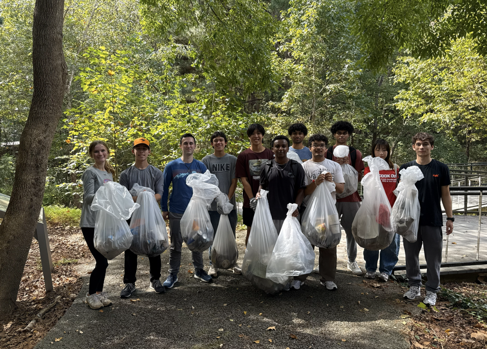
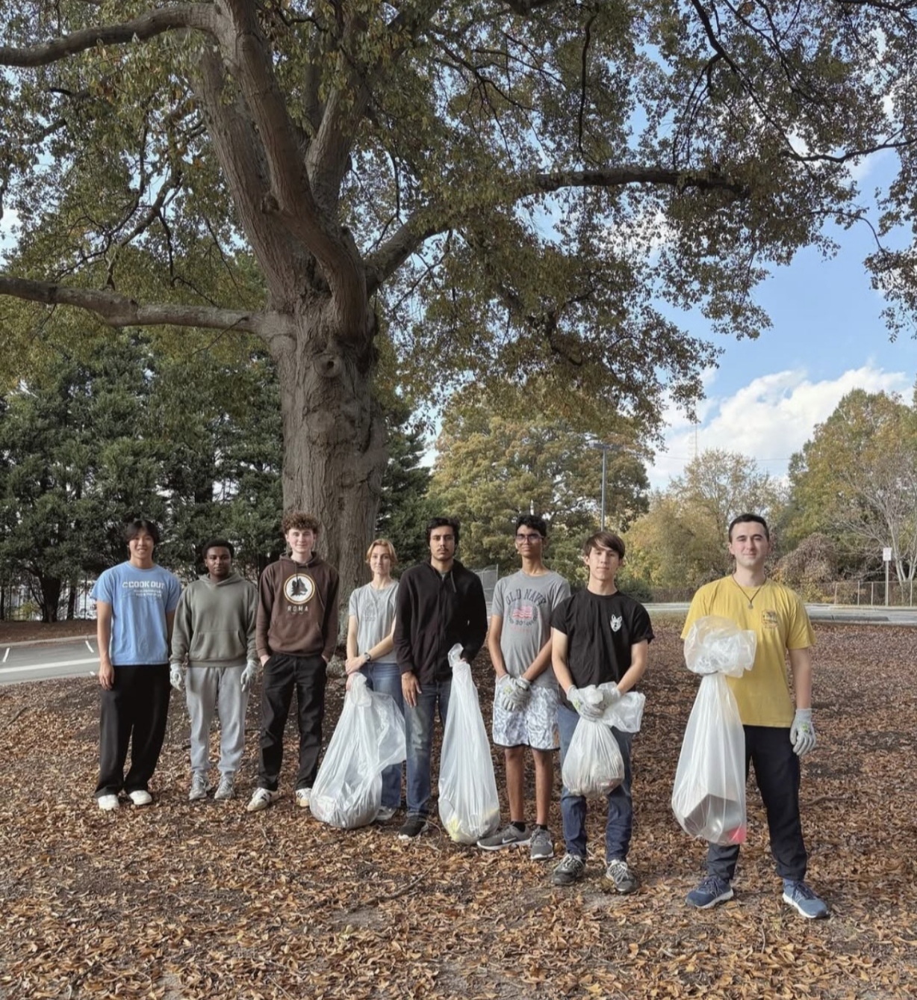

Upcoming Events
Our first cleanup event of the new semester is scheduled for mid to late January.
Past Events
Volunteer Cleanup at The Beaver Creek on Sullivan St. on November 9th, 2025!

Volunteer Cleanup in a forest area on Centennial Campus on October 5th, 2025!
